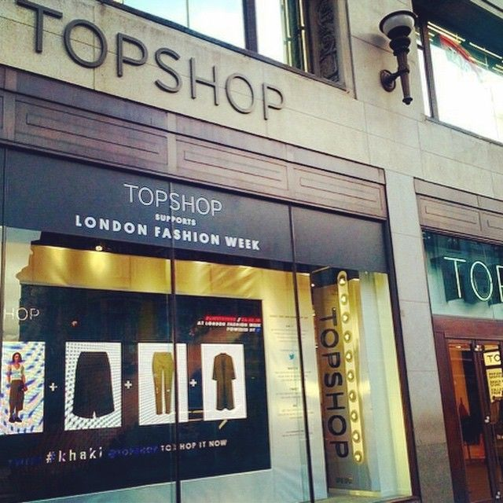
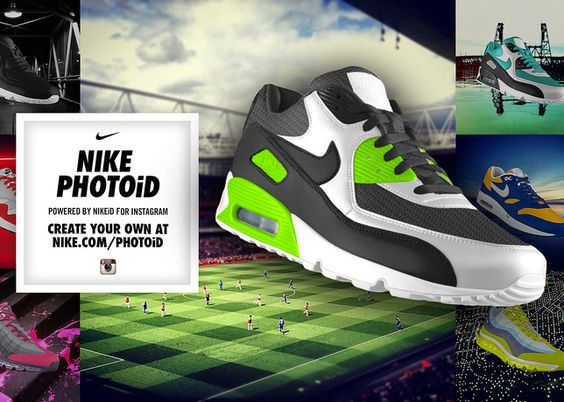

Running Campaigns
#LIVETRENDS

During the 2015 London Fashion Week, Topshop teamed up with Twitter and launched the #LIVETRENDS real-time campaign. Based on the front row fashion Tweets, most in-trend styles were identified and the collections were accordingly made available in stores to let customers shop for those immediately,
informed by the real-time data collected by the brand. The content was put up seamlessly across Twitter, on their website, in the window of its flagship store and on digital billboards in key UK cities, within ten minutes’ walk of the nearest Topshop store by integrating trend data from Twitter with product data from Topshop’s systems.
The result was a 75% increase in sales of the featured products.
#NIKEPHOTOiD

Capitalizing on its 10 million strong following on Instagram, Nike launched one of the most popular campaigns on Instagram, #NIKEPHOTOiD, inviting its followers to share photos of their customized trainers.
The followers could use their Instagram photos to create these trainers and could further share these photos on various social platforms. They were helped in creating their personalized products through a microsite.
This campaign resulted in an increased engagement with the followers, encouraging them to be creative. Interestingly, 100,000 personalized shoes were created in the first week itself.
Other remarkable features of this campaign were that the campaign was organized without any media spend, and it resulted in 8% clicks to buy personalized shoes on Nike ID.
Burberry
Burberry has capitalized on the customer’s interest in the social media.
Its recent initiative of sharing behind-the-scenes pictures and videos of Brooklyn Beckham at work with his models in London while working on the company’s latest Brit fragrance campaign, on its account.
The company’s Instagram and Snapchat feeds had some 15 million impressions in the eight hours the shoot was live.
The company now has nearly 40 million followers across 20 different social media platforms.